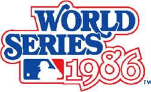

| Home Page | 1969 | 1973 | 2000 | 2015 |

The 1986 World Series was the most recent that the Mets have won. They played the Boston Sox, who were just coming off of a close series against the California Angels. This series went 7 games, with a miraculous come back by the Mets after being down 3-2 in the series. Game 6 was the most notable game in this series, as the Mets mounted run support late in the game when their hopes looked very grim, thanks to a famous error by Bill Buckner of the Red Sox. The Mets rode this momentum to then win game 7, in what was considered one of the most topsy turvy World Series' ever.